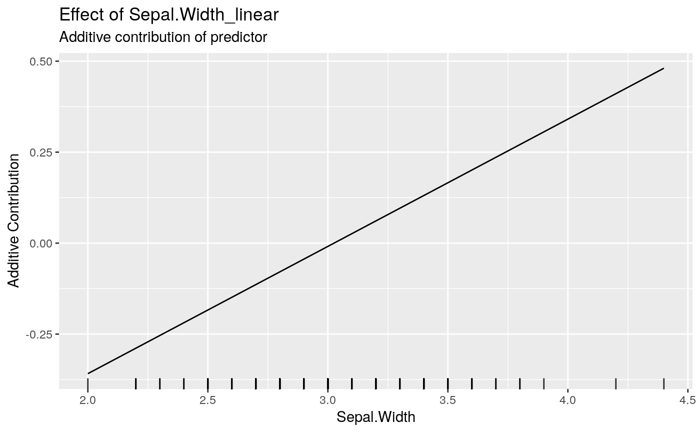
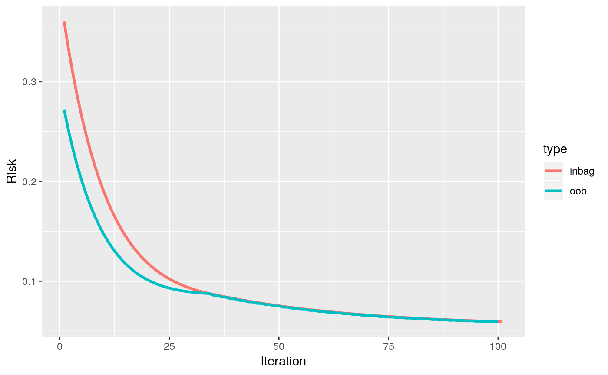

boostLinear.RdThis wrapper function automatically initialize the model by adding all numerical
features as linear base-learner. Categorical features are dummy encoded and inserted
using another linear base-learners without intercept. The function boostLinear
does also train the model.
boostLinear(data, target, optimizer = OptimizerCoordinateDescent$new(), loss, learning.rate = 0.05, iterations = 100, trace = -1, intercept = TRUE, data.source = InMemoryData, data.target = InMemoryData, oob.fraction = NULL)
| data | [ |
|---|---|
| target | [ |
| optimizer | [ |
| loss | [ |
| learning.rate | [ |
| iterations | [ |
| trace | [ |
| intercept | [ |
| data.source | [ |
| data.target | [ |
| oob.fraction | [ |
A model of the Compboost class. This model is an R6 object
which can be used for retraining, predicting, plotting, and anything described in
?Compboost.
The returned object is an object of the Compboost class. This object can be
used for further analyses (see ?Compboost for details).
mod = boostLinear(data = iris, target = "Sepal.Length", loss = LossQuadratic$new(), oob.fraction = 0.3)#> 1/100 risk = 0.33 oob_risk = 0.27 #> 2/100 risk = 0.31 oob_risk = 0.25 #> 4/100 risk = 0.27 oob_risk = 0.22 #> 6/100 risk = 0.23 oob_risk = 0.19 #> 8/100 risk = 0.2 oob_risk = 0.17 #> 10/100 risk = 0.18 oob_risk = 0.15 #> 12/100 risk = 0.16 oob_risk = 0.13 #> 14/100 risk = 0.15 oob_risk = 0.12 #> 16/100 risk = 0.13 oob_risk = 0.11 #> 18/100 risk = 0.12 oob_risk = 0.11 #> 20/100 risk = 0.11 oob_risk = 0.1 #> 22/100 risk = 0.11 oob_risk = 0.097 #> 24/100 risk = 0.1 oob_risk = 0.094 #> 26/100 risk = 0.098 oob_risk = 0.092 #> 28/100 risk = 0.094 oob_risk = 0.09 #> 30/100 risk = 0.091 oob_risk = 0.089 #> 32/100 risk = 0.089 oob_risk = 0.088 #> 34/100 risk = 0.087 oob_risk = 0.088 #> 36/100 risk = 0.085 oob_risk = 0.086 #> 38/100 risk = 0.083 oob_risk = 0.084 #> 40/100 risk = 0.082 oob_risk = 0.082 #> 42/100 risk = 0.08 oob_risk = 0.081 #> 44/100 risk = 0.079 oob_risk = 0.079 #> 46/100 risk = 0.077 oob_risk = 0.078 #> 48/100 risk = 0.076 oob_risk = 0.076 #> 50/100 risk = 0.075 oob_risk = 0.075 #> 52/100 risk = 0.074 oob_risk = 0.074 #> 54/100 risk = 0.073 oob_risk = 0.073 #> 56/100 risk = 0.072 oob_risk = 0.072 #> 58/100 risk = 0.071 oob_risk = 0.071 #> 60/100 risk = 0.07 oob_risk = 0.07 #> 62/100 risk = 0.069 oob_risk = 0.069 #> 64/100 risk = 0.068 oob_risk = 0.068 #> 66/100 risk = 0.067 oob_risk = 0.067 #> 68/100 risk = 0.067 oob_risk = 0.067 #> 70/100 risk = 0.066 oob_risk = 0.066 #> 72/100 risk = 0.065 oob_risk = 0.065 #> 74/100 risk = 0.065 oob_risk = 0.065 #> 76/100 risk = 0.064 oob_risk = 0.064 #> 78/100 risk = 0.064 oob_risk = 0.064 #> 80/100 risk = 0.063 oob_risk = 0.063 #> 82/100 risk = 0.063 oob_risk = 0.063 #> 84/100 risk = 0.062 oob_risk = 0.062 #> 86/100 risk = 0.062 oob_risk = 0.062 #> 88/100 risk = 0.061 oob_risk = 0.061 #> 90/100 risk = 0.061 oob_risk = 0.061 #> 92/100 risk = 0.061 oob_risk = 0.061 #> 94/100 risk = 0.06 oob_risk = 0.06 #> 96/100 risk = 0.06 oob_risk = 0.06 #> 98/100 risk = 0.06 oob_risk = 0.06 #> 100/100 risk = 0.059 oob_risk = 0.059 #> #> #> Train 100 iterations in 0 Seconds. #> Final risk based on the train set: 0.06 #>mod$getBaselearnerNames()#> [1] "Sepal.Width_linear" "Petal.Length_linear" #> [3] "Petal.Width_linear" "Species_setosa_category" #> [5] "Species_versicolor_category" "Species_virginica_category"mod$getEstimatedCoef()#> $Petal.Length_linear #> [,1] #> [1,] -1.6117013 #> [2,] 0.4330313 #> #> $Sepal.Width_linear #> [,1] #> [1,] -1.0581117 #> [2,] 0.3497064 #> #> $offset #> [1] 5.814286 #>#> #> Petal.Length_linear Sepal.Width_linear #> 67 33mod$predict()#> [,1] #> [1,] 4.974689 #> [2,] 4.799836 #> [3,] 4.826474 #> [4,] 5.009660 #> [5,] 4.939718 #> [6,] 4.983021 #> [7,] 4.764865 #> [8,] 4.878110 #> [9,] 5.026325 #> [10,] 4.799836 #> [11,] 4.669926 #> [12,] 5.332728 #> [13,] 5.071268 #> [14,] 5.087933 #> [15,] 4.836447 #> [16,] 5.156234 #> [17,] 4.886442 #> [18,] 5.026325 #> [19,] 5.017992 #> [20,] 4.983021 #> [21,] 5.219483 #> [22,] 4.878110 #> [23,] 4.783171 #> [24,] 4.931386 #> [25,] 5.009660 #> [26,] 4.756533 #> [27,] 4.983021 #> [28,] 4.931386 #> [29,] 4.826474 #> [30,] 5.061295 #> [31,] 5.296117 #> [32,] 4.799836 #> [33,] 4.869777 #> [34,] 5.087933 #> [35,] 4.904748 #> [36,] 6.298780 #> [37,] 6.212174 #> [38,] 6.115595 #> [39,] 6.072292 #> [40,] 6.333751 #> [41,] 6.150565 #> [42,] 5.777502 #> [43,] 5.359495 #> [44,] 6.012323 #> [45,] 5.645952 #> [46,] 6.193868 #> [47,] 6.142233 #> [48,] 5.864108 #> [49,] 5.862468 #> [50,] 5.707561 #> [51,] 6.342084 #> [52,] 5.855776 #> [53,] 6.140592 #> [54,] 6.020656 #> [55,] 6.098930 #> [56,] 6.202201 #> [57,] 6.358749 #> [58,] 5.569319 #> [59,] 5.629287 #> [60,] 5.585984 #> [61,] 5.777502 #> [62,] 6.297140 #> [63,] 5.854135 #> [64,] 5.969020 #> [65,] 5.750864 #> [66,] 5.959047 #> [67,] 6.185536 #> [68,] 5.785835 #> [69,] 5.377801 #> [70,] 5.977353 #> [71,] 6.020656 #> [72,] 5.317833 #> [73,] 5.899079 #> [74,] 6.705174 #> [75,] 7.051599 #> [76,] 5.967380 #> [77,] 6.886719 #> [78,] 7.044907 #> [79,] 6.383746 #> [80,] 6.575264 #> [81,] 6.183895 #> [82,] 6.332110 #> [83,] 6.558599 #> [84,] 7.374667 #> [85,] 7.041625 #> [86,] 6.078983 #> [87,] 6.731812 #> [88,] 6.245504 #> [89,] 7.024960 #> [90,] 6.210533 #> [91,] 6.766782 #> [92,] 6.202201 #> [93,] 6.548626 #> [94,] 6.705174 #> [95,] 6.765142 #> [96,] 6.835083 #> [97,] 6.758450 #> [98,] 6.610235 #> [99,] 6.272142 #> [100,] 6.566932 #> [101,] 6.653538 #> [102,] 6.297140 #> [103,] 6.818418 #> [104,] 6.766782 #> [105,] 6.402052mod$plotInbagVsOobRisk()